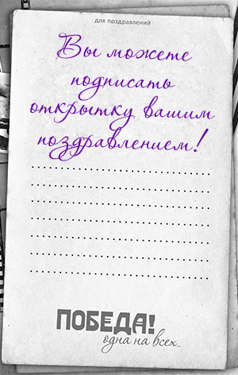

ВИДЕООТКРЫТКИ О 30-Х ГОДАХ
30-е годы — это время невиданного трудового энтузиазма: первых метростроевцев и стахановцев. Герои страны — летчики, полярники, пограничники, знатные рабочие и колхозники. Неслучайно именно в это десятилетие учреждено звание Героя Советского Союза. На экраны страны выходят «Веселые ребята» и «Чапаев», «Цирк» и «Волга-Волга», а настоящим символом отечественного кино становится Любовь Орлова — единственная и неповторимая.
Впервые проведены чемпионаты СССР по футболу и хоккею с мячом. Валерий Чкалов совершает беспосадочный перелет Москва — Северный полюс — Ванкувер. Страна с размахом отмечает юбилей Сталина. А под конец десятилетия начинается Вторая мировая война.